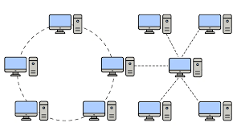

Topología punto a punto
Una red punto a punto, o una topología de puntos, es la red más fácil de entender y el tipo de topología de red más básico. Son simplemente dos nodos que están conectados por un único enlace. Los datos viajan ida y vuelta entre estos dos endpoints. Si bien este es el tipo de red más fácil de configurar, su simplicidad es su propia desventaja. Una topología punto a punto no es aplicable a la mayoría de los casos de uso modernos.
|

|
Topología de bus
En una red de bus, cada nodo está conectado a un solo cable, como paradas de bus que se bifurcan desde una ruta de bus. Toda la transmisión de datos fluye a través de esa única conexión central. Debido a que todo está conectado en línea recta a partir de un cable central, es una topología rentable y fácil de configurar y agregar nuevos nodos.
|

|
Topología de anillo
En una red de anillo, los nodos y enlaces se organizan en un anillo. Cada nodo tiene exactamente dos vecinos. En una red de este tipo, los repetidores se emplean para garantizar que los datos puedan llegar a los nodos que están más alejados entre sí en el anillo. Los datos generalmente fluyen unidireccionalmente en una red de anillo.
|

|
Topología de estrella
En una red de estrella, todos los nodos están conectados a un hub central. Los nodos se colocan alrededor de ese hub central en una forma que se asemeja aproximadamente a una estrella.
|

|
Topología de árbol
Es útil pensar en una topología de árbol como una combinación de una red de bus y una red de estrella. En una topología de árbol, sigue habiendo un hub central que lo conecta todo, pero en lugar de nodos individuales que se ramifican desde ese nodo raíz central, se trata de otras redes de estrella. Esta topología permite que más dispositivos se conecten a un centro de datos central, lo que acelera el flujo de datos. Al igual que en una red de estrella, identificar problemas con nodos individuales es relativamente fácil.
|

|
Topología de malla
En una red de malla, cada dispositivo está conectado al menos a otro nodo de la red. En una red de malla completa, cada nodo está conectado a todos los demás nodos. En una red de malla parcial, solo algunos de los nodos se conectan directamente entre sí, mientras que otros necesitan pasar a través de nodos adicionales para llegar al nodo objetivo.
|

|
Topología híbrida
Una topología de red híbrida es cualquier tipo de red que emplea una combinación de topologías. Una red de árbol que combina una red en estrella y una red de bus es un tipo de topología híbrida. |

|